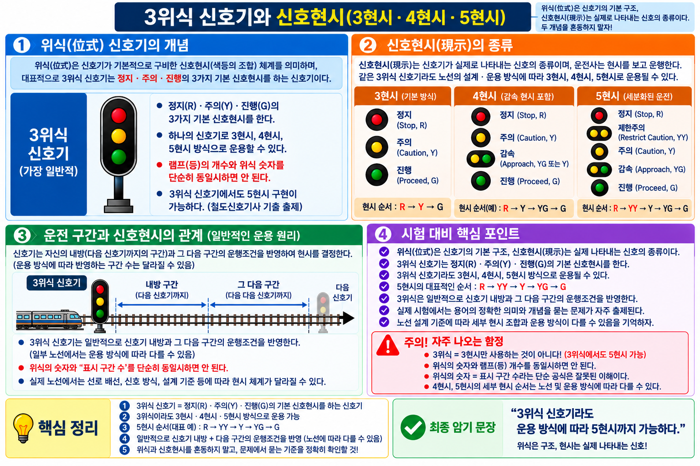

§ 1. 지상신호 vs 차내신호 — 개념·특징 비교
개념 A지상신호 vs 차내신호 — 정의·특징 비교
| 구분 | 지상신호(Wayside Signal) | 차내신호(Cab Signal) |
|---|
| 정의 | 선로변 신호기를 기관사가 외부에서 육안으로 확인하는 방식 | 동력차 안에 설치하여 운전실에서 직접 신호를 현시하는 방식 |
| 확인 방법 | 선로변(지상) 신호기 육안 확인 | 운전실 내부 표시장치(DMI) 확인 |
| 속도 제한 | 고속 운전 시 확인거리 문제 발생 → 속도 제한 필요 | 속도 제한 없음 (고속·고밀도 운전 가능) |
| 시계(視界) 의존 | 시계가 나쁜 구간(안개·터널) 확인 어려움 | 시계에 무관하게 운전실 내 표시 가능 |
| 적용 구간 | 일반 구간 | 고속선·도시철도 등 고속·고밀도 구간 |
이론 배경: 고속운전에서는 선로변 신호기를 기관사가 눈으로 확인하기 어렵고 확인거리(600m 이하)도 부족. 차내신호는 궤도회로를 통해 신호정보를 차량에 전송하므로 고속·고밀도 운전에 적합하다. 철도차량운전규칙 제83조~제85조에서 차내신호의 종류·현시방식·원칙을 규정한다.
📝 기출 예시 ★ 빈출
Q. 고속·고밀도 운전에서 차내신호 방식의 장점으로 가장 적절한 것은?
정답: 시계가 나쁜 구간에서도 운전실에서 지속적으로 운전정보를 확인할 수 있다는 점
오답함정: "설비가 단순하다" — 차내신호 설비는 지상신호보다 복잡. 장점은 고속 대응 가능성이다
§ 2. 차내신호 4종 — 정지·15·야드·진행 (철도차량운전규칙 제83조)
개념 B차내신호 종류 및 제한속도 (철도차량운전규칙 제83조)
| 차내신호 종류 | 의미 | 제한속도 | 암기 포인트 |
|---|
| 정지신호 | 열차를 즉시 정지시켜야 하는 신호 | 0 km/h (즉시 정지) | 가장 강한 제한 |
| 15신호 | 15 km/h 이하로 서행하도록 제한하는 신호 | 15 km/h 이하 | 숫자 그대로 15 |
| 야드신호 | 차량기지(야드) 내 저속 진행을 허가하는 신호 | 25 km/h 이하 | 야드=25, 15 아님! |
| 진행신호 | 지정된 속도 이하로 운전할 수 있음을 나타내는 신호 | 지정속도 이하 | 최고속도 허용 |
⚠️ 함정 주의: 차내신호 종류는 정확히 4종 — 정지·15·야드·진행. "서행신호"는 차내신호에 없다 (서행신호는 지상 임시신호기)
⚠️ 함정 주의: 야드신호 = 25 km/h 이하 — "15km/h"로 교체하는 함정 주의. 15신호와 야드신호의 속도 수치를 맞바꾸는 출제가 많다
⚠️ 함정 주의: 차내신호 종류 수 — "3종" 또는 "5종"으로 교체 출제. 반드시 4종으로 답할 것
이론 배경: 철도차량운전규칙 제83조는 차내신호의 종류와 각 신호가 의미하는 제한속도를 규정한다. 4종(정지·15·야드·진행) 중 야드신호가 25 km/h라는 수치를 특히 정확히 암기해야 한다.
개념 C차내신호 관련 법규 — 제83조·제84조·제85조
| 법조문 | 내용 |
|---|
| 철도차량운전규칙 제83조 | 차내신호의 종류 및 제한속도 — 정지·15·야드·진행 4종 규정 |
| 철도차량운전규칙 제84조 | 차내신호의 신호현시방식 — 차내신호 사용구간에서 지상신호기는 종속적 역할 |
| 철도차량운전규칙 제85조 | 신호현시의 기본원칙 — 고속·고밀도 운전에서 차내신호 방식의 적용 근거 |
📝 기출 예시
Q. "차내신호의 종류 및 제한속도"를 직접 규정하는 법조문은?
정답: 철도차량운전규칙 제83조
오답함정: 제84조(현시방식), 제85조(기본원칙)와 혼동 주의 — 종류·속도는 반드시 83조
§ 3. 위식신호기 — 구조·표시구간 (VIS-043)
개념 D위식(位式) 신호기 — 3위식·4위식

▲ VIS-043 위식 신호기 3위식·4위식 표시 구간 도해
| 종류 | 표시 구간 | 현시 수 |
|---|
| 3위식 | 앞 2구간 상태 표시 | 정지·주의·진행 (3가지) |
| 4위식 | 앞 3구간 상태 표시 | 정지·주의·감속·진행 (4가지) |
⚠️ 핵심 함정: 3위식 = 앞 2구간 — "앞 3구간"으로 교체하는 함정이 자주 출제됨
⚠️ 핵심 함정: 4위식 = 앞 3구간 — 위식의 숫자(3·4)와 표시구간(2·3)은 항상 1씩 차이가 남
이론 배경: 위식(位式)은 신호기가 표시하는 앞쪽 구간 수를 의미한다. 3위식은 3가지 현시(정지·주의·진행)로 앞 2구간 상태를 표시하고, 4위식은 4가지 현시(정지·주의·감속·진행)로 앞 3구간 상태를 표시한다. 위식의 숫자(3, 4)는 현시 수를 가리키며, 표시구간은 항상 위식 숫자보다 1 작다.
📝 기출 예시
Q. 3위식 신호기가 표시하는 앞쪽 구간 수는?
① 1구간 ② 2구간 ③ 3구간 ④ 4구간
정답: ② 2구간 — 3위식은 정지·주의·진행의 3가지 현시로 앞 2구간 상태를 표시한다
오답함정: "3구간"이라고 답하는 오답 — 위식 숫자(3)와 표시구간(2)을 혼동하지 말 것
§ 6. 기출 문제 (16문항)
▸ sig_001 | Grade S | Part 1 차내신호
01. 다음 설명에 해당하는 용어·장치로 가장 적절한 것은?
"동력차 안에 설치하여 운전실에서 신호를 현시하는 방식이다."
① 고속·고밀도 운전에서 차내표시의 장점
② 철도차량운전규칙 제83조
③ 지상신호
④ 차내신호
▸ sig_003 | Grade S | Part 1 지상신호
02. 다음 설명에 해당하는 용어·장치로 가장 적절한 것은?
"선로변 신호기를 기관사가 외부에서 육안으로 확인하는 방식이다."
① 신호의 기본 기능
② 15신호
③ 지상신호
④ 고속·고밀도 운전에서 차내표시의 장점
▸ sig_005 | Grade S | Part 1 정지신호
03. 다음 설명에 해당하는 용어·장치로 가장 적절한 것은?
"차내신호 중 열차를 정지시켜야 하는 신호이다."
① 지상신호
② 제한적 신호 우선
③ 진행신호
④ 정지신호
▸ sig_007 | Grade S | Part 1 15신호
04. 다음 설명에 해당하는 용어·장치로 가장 적절한 것은?
"차내신호 중 15 km/h 이하로 운전하도록 제한하는 신호이다."
① 진행신호
② 지상신호
③ 정지신호
④ 15신호
▸ sig_009 | Grade S | Part 1 야드신호 ★빈출
05. 다음 설명에 해당하는 용어·장치로 가장 적절한 것은?
"차내신호 중 25 km/h 이하로 운전하도록 제한하는 신호이다."
① 야드신호
② 15신호
③ 철도차량운전규칙 제85조
④ 철도차량운전규칙 제84조
▸ sig_010 | Grade S | Part 1 야드신호 ★빈출
06. 다음 중 「야드신호」에 대한 설명으로 옳은 것은?
① 신호현시의 기본원칙과 직접 관련된 조문이다.
② 운전실에서 속도·운행권한·신호 등 운전정보를 표시하는 인터페이스이다.
③ 차내신호 중 25 km/h 이하로 운전하도록 제한하는 신호이다.
④ 차내신호 중 지정된 속도 이하로 운전할 수 있음을 나타내는 신호이다.
▸ sig_011 | Grade S | Part 1 진행신호
07. 다음 설명에 해당하는 용어·장치로 가장 적절한 것은?
"차내신호 중 지정된 속도 이하로 운전할 수 있음을 나타내는 신호이다."
① 신호의 기본 기능
② 철도차량운전규칙 제84조
③ 진행신호
④ 철도차량운전규칙 제83조
▸ sig_002 | Grade S | Part 1 차내신호 설명
08. 다음 중 「차내신호」에 대한 설명으로 옳은 것은?
① 열차에 정지·진행·속도 제한 등 안전운전에 필요한 조건을 전달하는 것이다.
② 동력차 안에 설치하여 운전실에서 신호를 현시하는 방식이다.
③ 차내신호 중 15 km/h 이하로 운전하도록 제한하는 신호이다.
④ 운전실에서 속도·운행권한·신호 등 운전정보를 표시하는 인터페이스이다.
▸ sig_004 | Grade S | Part 1 지상신호 설명
09. 다음 중 「지상신호」에 대한 설명으로 옳은 것은?
① 차내신호 중 열차를 정지시켜야 하는 신호이다.
② 선로변 신호기를 기관사가 외부에서 육안으로 확인하는 방식이다.
③ 신호현시의 기본원칙과 직접 관련된 조문이다.
④ 차내신호 중 지정된 속도 이하로 운전할 수 있음을 나타내는 신호이다.
▸ sig_013 | Grade A | Part 1 제83조
10. 다음 설명에 해당하는 용어·장치로 가장 적절한 것은?
"차내신호의 종류 및 제한속도와 직접 관련된 조문이다."
① 철도차량운전규칙 제84조
② 진행신호
③ 신호의 기본 기능
④ 철도차량운전규칙 제83조
▸ sig_015 | Grade A | Part 1 제84조
11. 다음 설명에 해당하는 용어·장치로 가장 적절한 것은?
"차내신호의 신호현시방식과 직접 관련된 조문이다."
① 철도차량운전규칙 제84조
② 지상신호
③ 제한적 신호 우선
④ 정지신호
▸ sig_016 | Grade A | Part 1 제84조 설명
12. 다음 중 「철도차량운전규칙 제84조」에 대한 설명으로 옳은 것은?
① 차내신호 중 지정된 속도 이하로 운전할 수 있음을 나타내는 신호이다.
② 둘 이상의 신호 해석이 충돌하거나 불명확할 때 더 안전하고 제한적인 상태를 우선하는 원칙이다.
③ 차내신호의 신호현시방식과 직접 관련된 조문이다.
④ 차내신호 중 열차를 정지시켜야 하는 신호이다.
▸ sig_019 | Grade A+ | Part 1 DMI
13. 다음 설명에 해당하는 용어·장치로 가장 적절한 것은?
"운전실에서 속도·운행권한·신호 등 운전정보를 표시하는 인터페이스이다."
① 15신호
② 철도차량운전규칙 제85조
③ 제한적 신호 우선
④ DMI/차내표시장치
▸ sig_023 | Grade A+ | Part 1 고속구간 장점
14. 다음 설명에 해당하는 용어·장치로 가장 적절한 것은?
"시계가 나쁜 구간에서도 운전실에서 지속적으로 운전정보를 확인할 수 있다는 점이다."
① 지상신호
② 고속·고밀도 운전에서 차내표시의 장점
③ 철도차량운전규칙 제85조
④ 야드신호
▸ VIS-043 기출유형 | Grade S | 위식신호기 핵심
15. 다음 중 위식(位式) 신호기의 표시 구간에 대한 설명으로 옳은 것은?
① 3위식은 앞 1구간의 상태를 표시한다.
② 3위식은 앞 3구간의 상태를 표시한다.
③ 4위식은 앞 4구간의 상태를 표시한다.
④ 3위식은 앞 2구간의 상태를 표시한다.
▸ VIS-043 기출유형 | Grade A | 위식신호기 4위식
16. 4위식 신호기에 대한 설명으로 옳은 것은?
① 정지·주의·진행의 3가지 현시로 앞 2구간 상태를 표시한다.
② 정지·주의·감속·진행의 4가지 현시로 앞 3구간 상태를 표시한다.
③ 정지·주의·감속·진행의 4가지 현시로 앞 4구간 상태를 표시한다.
④ 정지·주의·진행의 3가지 현시로 앞 3구간 상태를 표시한다.
정답 및 해설
01 ④
02 ③
03 ④
04 ④
05 ①
06 ③
07 ③
08 ②
09 ②
10 ④
11 ①
12 ③
13 ④
14 ②
15 ④
16 ②
01 (sig_001)
정답: ④ 차내신호
동력차 안에 설치하여 운전실에서 신호를 현시하는 방식 = 차내신호의 정의.
02 (sig_003)
정답: ③ 지상신호
선로변 신호기를 기관사가 외부에서 육안으로 확인 = 지상신호의 정의.
03 (sig_005)
정답: ④ 정지신호
차내신호 4종 중 열차를 즉시 정지시켜야 하는 신호 = 정지신호.
04 (sig_007)
정답: ④ 15신호
차내신호 중 15 km/h 이하 제한 = 15신호. 숫자(15)를 그대로 적용.
05 (sig_009)
정답: ① 야드신호
25 km/h 이하 = 야드신호. 야드(차량기지)에서 적용. 15km/h는 15신호이므로 혼동 주의.
⚠️ 야드신호=25km/h / 15신호=15km/h — 수치 교체 함정 최빈출
06 (sig_010)
정답: ③ 차내신호 중 25 km/h 이하로 운전하도록 제한하는 신호이다.
야드신호의 정의. ④ "지정속도 이하"는 진행신호의 설명.
07 (sig_011)
정답: ③ 진행신호
지정된 속도 이하로 운전 가능 = 진행신호. 4종 중 제한이 가장 느슨한 신호.
08 (sig_002)
정답: ② 동력차 안에 설치하여 운전실에서 신호를 현시하는 방식이다.
차내신호의 정의. ①은 "신호의 기본 기능", ③은 "15신호", ④는 "DMI"의 설명.
09 (sig_004)
정답: ② 선로변 신호기를 기관사가 외부에서 육안으로 확인하는 방식이다.
지상신호의 정의. 나머지는 정지신호·85조·진행신호 설명.
10 (sig_013)
정답: ④ 철도차량운전규칙 제83조
차내신호의 종류·제한속도 → 제83조. 제84조=현시방식, 제85조=기본원칙.
⚠️ 83·84·85조 내용 혼동 함정 — 83조=종류·속도로 확실히 암기
11 (sig_015)
정답: ① 철도차량운전규칙 제84조
차내신호의 신호현시방식 → 제84조.
12 (sig_016)
정답: ③ 차내신호의 신호현시방식과 직접 관련된 조문이다.
제84조 = 현시방식. ②는 "제한적 신호 우선" 원칙 설명.
13 (sig_019)
정답: ④ DMI/차내표시장치
Driver-Machine Interface. 운전실에서 속도·운행권한·신호 등 운전정보를 표시하는 인터페이스.
14 (sig_023)
정답: ② 고속·고밀도 운전에서 차내표시의 장점
시계(가시거리)가 나쁜 구간에서도 운전실 내부 표시로 운전정보 확인 가능 = 차내신호의 핵심 장점.
15 (위식신호기)
정답: ④ 3위식은 앞 2구간의 상태를 표시한다.
3위식 = 3가지 현시(정지·주의·진행) / 앞 2구간 표시. 위식 숫자(3)와 표시구간(2)은 항상 1 차이.
⚠️ "3위식=앞 3구간"이 가장 빈번한 오답 함정
16 (위식신호기)
정답: ② 정지·주의·감속·진행의 4가지 현시로 앞 3구간 상태를 표시한다.
4위식 = 4가지 현시(정지·주의·감속·진행) / 앞 3구간 표시. ③의 "앞 4구간"은 오답.
07-02 차내신호·위식신호기 | FINAL PUBLISH v1.0 | 기출 16문항 (sig_001~024 기반 14문항 + 위식신호기 2문항) | PRINT LOCK 12/12/12/18mm